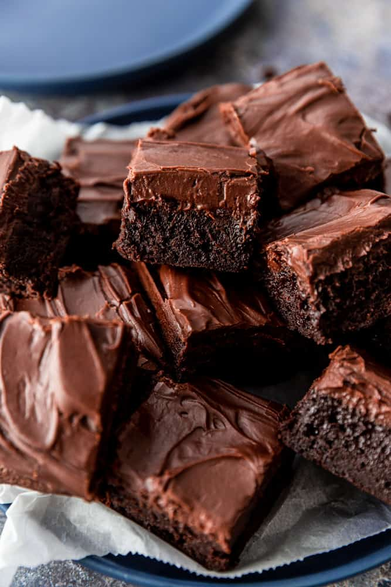

Brownies Recipe
Home

Description
Ingredients
For the brownies:
- 1/2 cup butter
- 1 cup white sugar
- 2 large eggs
- 1 teaspoon vanilla extract
- 1/3 cup unsweetened cocoa powder
- 1/2 cup all-purpose flour
- 1/4 teaspoon salt
- 1/4 teaspoon baking powder
For the frosting:
- 3 tablespoons butter, softened
- 3 tablespoons unsweetened cocoa powder
- 1 tablespoon honey
- 1 teaspoon vanilla extract
- 1 cup confectioners' sugar
Steps
Instructions:
- Preheat the oven to 350 degrees F (175 degrees C).
Grease and flour an 8-inch square baking pan.
- Melt 1/2 cup butter in a large saucepan. Remove from heat,
and stir in sugar, eggs, and 1 teaspoon vanilla. Beat in 1/3 cup cocoa,
flour, salt, and baking powder. Spread batter into prepared pan.
- Bake in the preheated oven until top is dry and edges have started to pull
away from the sides of the pan, about 25 to 30 minutes. Let cool briefly
before frosting.
- To make the chocolate frosting: Combine softened butter, confectioners' sugar,
3 tablespoons cocoa, honey, and 1 teaspoon vanilla extract in a bowl. Stir until
smooth. Frost brownies while they are still slightly warm.